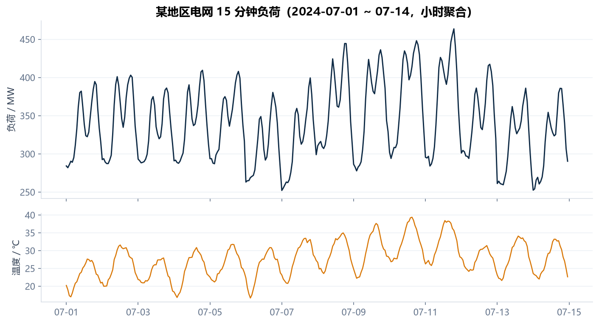
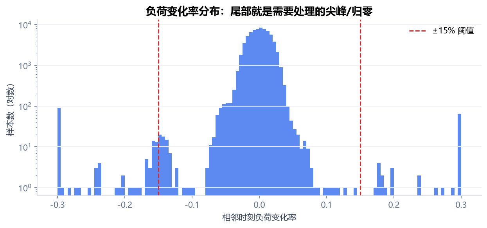
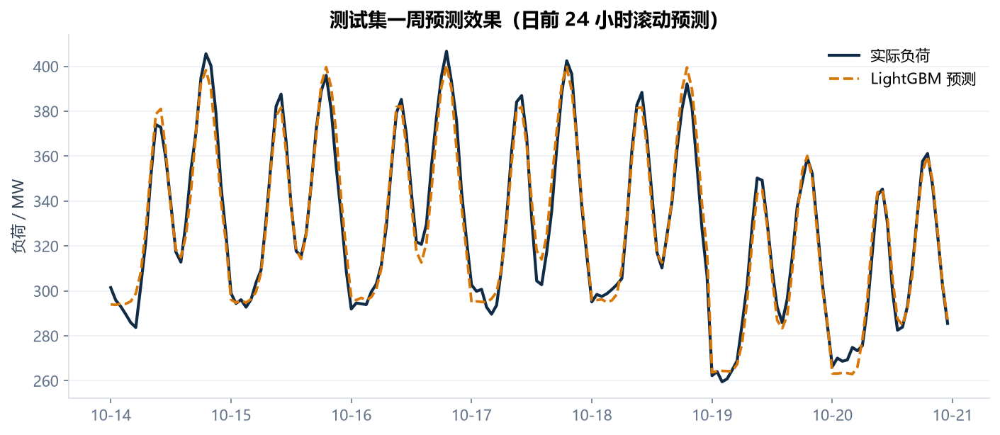

区域电网短期负荷预测
一个能从头跑到尾、能当面演示、也能经受追问的完整项目：2 年 15 分钟数据、真实脏数据、25 个特征、LightGBM 多步长建模，测试集 MAPE 1.78%，并诚实说明它为什么这么好、上线会打几折。
先看“一句话定义任务”，再读“数据怎么来”，然后看“方法有哪几步”，最后回到指标。这一页不是线性教材，而是项目档案：做项目时用来对照，面试前用来复习。术语卡住就回 第 1 章 或 零基础补课 查。
项目背景：这个模型给谁用
某区域电网（或大型园区）每天要在前一天中午之前向调度/交易中心申报次日的用电计划。申报偏高，要多买备用容量；申报偏低，会被考核甚至触发限电。人工凭经验做，误差通常在 5%~8%；用模型做到 2%~3%，一年能省下的偏差考核费用是实打实的。
给定某天 0 点之前的历史负荷、已知的气象预报和日历信息，预测未来 1~24 小时的逐时负荷。这是典型的日前短期负荷预测（STLF），也是储能调度、机组组合、需量控制的上游输入。
业务链条：预测错了会怎样
申报偏差 → 考核费用
预测偏高，多申报的电量要按偏差电价结算；预测偏低，缺口部分可能按惩罚电价购买。误差直接映射成钱。
储能调度失去依据
储能要在谷段充电、峰段放电。如果预测的峰谷时刻错了，充放电策略就会反过来，越调越亏。
需量控制误动作
园区按最大需量计费。预测偏低会导致削峰不足，当月基本电费上升；预测偏高会过度削峰，影响生产。
任务定义与验收标准
| 项目 | 定义 |
|---|---|
| 预测起点 | 每天 00:00（origin），此时已知此前全部历史负荷 |
| 输入 | origin 及之前 7 天的逐时负荷；未来 24 小时气象预报；目标时刻的日历（小时、周几、是否节假日） |
| 输出 | 未来 24 个整点的负荷预测值（MW），即 24 个 horizon |
| 训练 / 验证 / 测试 | 按时间切分：2024-07-01 前训练（311,040 样本）；7~9 月验证（52,992）；10~12 月测试（52,692） |
| 主指标 | MAPE（平均绝对百分比误差），辅助 MAE、RMSE |
| 验收标准 | 测试集 MAPE ≤ 2.5%，且峰段 MAPE ≤ 3%，优于“昨日同期”基线至少 50% |
因为不同地区、不同季节的负荷难度差异极大。只写“MAPE 2%”容易被质疑；写“比昨日同期基线好 50% 以上”，说明你的模型确实贡献了增量价值，而不是数据本身就好预测。这是面试时非常加分的表述方式。
数据：怎么造的，为什么这么造
真实数据涉密，所以用脚本生成。但生成逻辑不是随便编的，而是按可解释的加法模型拼出来：基础负荷 + 日内双峰 + 周规律 + 节假日 + 温度响应 + 自然增长 + 相关噪声。这样每条曲线都能解释，也便于讲清“模型学到了什么”。
| 成分 | 生成方式 | 现实对应 |
|---|---|---|
| 基础负荷 | 262 MW 常数 | 连续生产、照明、基础设施的底座 |
| 日内双峰 | 10 点与 19:18 两个高斯峰，幅度 88 / 104 MW | 早高峰、晚高峰 |
| 周规律 | 周末 ×0.90 | 办公与商业用电下降 |
| 节假日 | 法定假日 ×0.80（含调休表） | 春节、国庆等 |
| 温度响应 | 制冷 2.9×max(T−25,0)^1.3；供暖 2.3×max(3−T,0)^1.2 | 空调与采暖的非线性负荷 |
| 自然增长 | 两年约 +4.5% | 经济发展、新用户接入 |
| 噪声 | AR(1)，系数 0.92，标准差 2.5 MW | 相邻时段相关，不是白噪声 |
| 需求响应 | 随机 8 次，每次 4 小时削减 6% | 有序用电、需求响应事件 |
刻意注入的“脏数据”
干净数据练不出清洗能力。脚本在生成后注入了四类问题，模拟真实用采系统的常见故障：
| 问题 | 注入规模 | 清洗策略 |
|---|---|---|
| 随机缺失 | 0.5%（约 350 个点） | 短缺口线性插值（≤2 小时）；长缺口用前一日同时刻补 |
| 连续掉线 | 1 段连续 3 小时 | 按长缺口处理，保留“曾经缺失”的记录 |
| 尖峰 / 归零 | 0.12%，×4、×6.5 或置 0 | 滚动中位数偏离 >60% 判为粗差，置空后补 |
| 重复记录 | 40 行 | 按时间戳去重，保留首条 |
| 时间戳乱序 | 30 行 | 排序后重建连续时间索引 |
原始文件 70,216 行，重复 40 行，缺失率 0.516%。清洗后重采样为逐小时，实际可用 17,544 小时；再做 24 个 horizon 的样本展开并去掉首尾不完整段，得到 416,724 条监督样本，其中训练 311,040 条。
数据长什么样
| ts | load_mw | temp_c | humidity | is_holiday | is_weekend |
|---|---|---|---|---|---|
| 2023-01-01 00:00 | 218.73 | -3.0 | 54.6 | 1 | 1 |
| 2023-01-01 00:15 | 217.15 | -3.1 | 56.6 | 1 | 1 |
| 2023-01-01 00:30 | 220.30 | -3.5 | 47.9 | 1 | 1 |
| 2023-07-15 14:00 | 498.62 | 33.4 | 61.2 | 0 | 0 |
| 2023-12-20 19:00 | 476.08 | -1.8 | 44.7 | 0 | 0 |



temp²、cooling、heating，而不是只放一个线性温度。
方法：从原始序列到 24 个预测点
整体流程是四步，全部在 train.py 里，跑一遍约 1~2 分钟。
清洗与重采样
去重 → 重建连续时间索引 → 负值/归零置空 → 滚动中位数剔除粗差 → 短缺口插值、长缺口用前一日同时刻补 → 重采样为逐小时。
构造监督样本
以每个整点为 origin，展开 24 个 horizon。滞后、滚动、日历、气象特征按“origin 时刻是否已知”严格区分，避免泄漏。
训练与对比
LightGBM 主模型 + Ridge + 昨日同期 + 上周同期三个基线；验证集早停，测试集只评一次。
评估与保存
输出总指标、分小时、分步长、分月、峰谷段误差；保存模型、特征列表、特征重要性、测试集预测明细。
模型配置
| 参数 | 取值 | 为什么 |
|---|---|---|
n_estimators | 2000（早停） | 给足上限，靠验证集早停决定实际树数，最终 183 棵 |
learning_rate | 0.04 | 偏保守，配合较多树数，泛化更稳 |
num_leaves | 96 | 能表达“温度 × 时段 × 节假日”的交互 |
min_child_samples | 40 | 抑制对少数异常日的过拟合 |
subsample / colsample | 0.9 / 0.9 | 行、列采样，增加多样性 |
reg_lambda | 1.0 | L2 正则 |
| 早停 | 100 轮 | 验证集 MAE 100 轮不降就停 |
24 个模型各自的样本只有 1/24，训练成本高且容易过拟合；单模型共享全部样本，靠 horizon 区分提前量，实测各 horizon 的 MAPE 几乎持平（1.80% → 1.78%），说明模型没有“只顾最近几步”。这是本项目一个值得讲的设计取舍。
结果：指标、对比与误差
| 模型 | MAE（MW） | RMSE（MW） | MAPE | 说明 |
|---|---|---|---|---|
| LightGBM | 5.76 | 7.25 | 1.78% | 25 特征，早停 183 棵 |
| Ridge 回归 | 9.77 | 12.50 | 3.00% | 线性，吃不下 U 形与交互 |
| 昨日同期 | 17.07 | 23.46 | 5.30% | 最强的朴素基线 |
| 上周同期 | 42.70 | 53.42 | 13.25% | 周末/天气错位严重 |


误差拆解：错在哪
按小时
最差 05:00（2.18%），最好 11:00（1.38%）。夜间基数小，同样的绝对误差会被放大。
按步长
horizon 1→24 从 1.80% 到 1.78%，几乎不变。说明模型不是靠“最近值”硬撑。
按月
10 月 1.89%、11 月 1.68%、12 月 1.75%。10 月含国庆，节假日样本少，是主要误差源。

峰段负荷基数大，百分比误差自然被压低；谷段基数小，且夜间负荷受天气、生产安排影响更随机，所以百分比更高。但这不代表峰段就“更准”——从绝对误差看，峰段的 MAE 反而更大。报指标时百分比和绝对值要一起给，否则容易被质疑选择性展示。

horizon 本身增益不大，但去掉后误差略升。load_lag24、load_lag48 增益为 0，因为与昨日同期高度共线）。消融实验：特征不是越多越好
固定切分与同一套超参（上限 800 棵、learning_rate=0.05、64 叶、早停 60 轮），逐类删特征重训，结果如下。这部分最能体现“你真的做过”，也最容易被追问。注意 full 的 MAE 5.78 与主结果 5.76 相差 0.02，是因为消融配置与主模型不同；比较只在同一配置内有效。
| 变体 | 特征数 | MAPE | MAE | 结论 |
|---|---|---|---|---|
| full | 25 | 1.78% | 5.78 | 完整特征 |
| no_weather | 21 | 2.22% | 7.24 | 去掉气象，误差上升 25%，气象是刚需 |
| calendar_only | 10 | 2.10% | 6.82 | 只有日历 + 温度，仍能到 2.1%，说明日周期极强 |
| no_recent_day | 24 | 1.66% | 5.38 | 去掉“昨日同期”，反而更好 |
| no_lag_rolling | 16 | 1.74% | 5.63 | 去掉滞后滚动，略好 |
| no_horizon | 24 | 1.79% | 5.80 | 去掉 horizon，影响很小 |
两个原因：① 冗余——same_hour_yesterday 与 load_lag24、roll24_mean 高度相关，在有限数据上会互相干扰；② 稳定性——昨日同期在节假日、检修日会给出错误锚点，反而误导模型。
正确结论不是“这个特征没用”，而是“加特征必须用验证集证明它有用”。这句话在面试里比任何分数都值钱。
这是在同一份仿真数据、同一套超参下得到的，只说明“在这个数据集上”。换城市、换季节、换测点层级，结论可能反转。表述时一定要加限定词，否则会被追问到答不上来。
工程化：从脚本到服务
projects/p1_load_forecast/ ├── generate_data.py # 生成 2 年 15 分钟仿真数据（含脏数据） ├── train.py # 清洗 + 特征 + 训练 + 评估 ├── ablation.py # 特征消融实验 ├── api.py # FastAPI 推理服务 └── artifacts/ # model.joblib / metrics.json / 预测明细 # 一键复现 python projects/p1_load_forecast/generate_data.py python projects/p1_load_forecast/train.py python projects/p1_load_forecast/ablation.py uvicorn api:app --port 8000 # 在项目目录下执行
服务接口设计见第 6 章：输入 origin_ts + load_history + weather_forecast + holidays，输出 24 个点。artifacts/model.joblib 里同时保存模型与特征名，避免列顺序错位。所有随机种子固定，重复运行指标只会有浮点级差异。
局限与改进：主动说出来
| 局限 | 影响 | 改进方向 |
|---|---|---|
| 气象用了实测值 | 相当于“完美预报”，MAPE 偏乐观 0.3~1.0 个点 | 接入历史预报做回测；用多源预报融合 |
| 仿真数据规律性强 | 1.78% 不代表真实城市水平 | 用公开数据集（如 PJM、ENTSO-E）复现一遍 |
| 节假日样本少 | 10 月（国庆）误差最高 | 节假日单独建模 / 样本加权 / 相似日匹配 |
| 未考虑检修与需求响应计划 | 突发检修日误差大 | 接入检修工单、需求响应事件作为特征 |
| 单点预测，无区间 | 无法表达不确定性 | 分位数回归（LightGBM objective=quantile）给 P10/P90 |
| 未做层级协调 | 区域总和与分区预测可能不一致 | 自下而上或分层协调（hierarchical reconciliation） |
“这个项目的价值不在 1.78% 这个数字，而在于我能说清：基线是多少、提升来自哪个特征、误差集中在哪、上线会打几折、下一步先改什么。”
面试追问：10 个必须准备的回答
Q1：数据是你仿真的，指标可信吗？
Q2：为什么 MAPE 这么低？是不是过拟合了？
Q3：上线后拿不到实测温度怎么办？
Q4：为什么不用 LSTM / Transformer？
Q5：24 个 horizon 一起训练，会不会互相干扰？
horizon 作为特征能让模型自己区分。实测各 horizon 的 MAPE 从 1.80% 到 1.78%，几乎没有衰减，说明没有出现‘只顾近端、远端崩掉’。另一种做法是分 4 个模型各管 6 小时，代价是样本变少、训练成本上升。”Q6：国庆误差最高，怎么改？
Q7：消融里去掉昨日同期更好，说明特征没用？
Q8：预测误差怎么变成钱？
Q9：模型上线后怎么监控？
Q10：这个项目你独立完成了多少？
复现清单
- Python 3.10+，安装 pandas、numpy、lightgbm、scikit-learn、joblib、fastapi、uvicorn。
- 运行
generate_data.py，确认生成 70,216 行、缺失率约 0.5%、重复 40 行。 - 运行
train.py，确认测试集 MAPE 为 1.78%（允许 0.01 的浮动）。 - 运行
ablation.py，确认 no_weather 明显变差、no_recent_day 略好。 - 打开
artifacts/metrics.json，核对分小时、分步长、分月指标。 - 启动 API，调
/health和/v1/forecast，确认返回 24 个点。 - 把
assets/img/charts/里的图与本文对照，确保能讲清每张图。